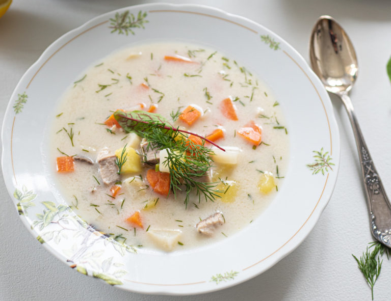

Porcje: 3-4
– 500-800 g ryby świeżej (karp, halibut, węgorz, makrela)
– 2 średnie marchewki
– 1 pietruszka
– 4 ziemniaki
– pół cebuli
– 1 – 1,5 l wody
– 2 liście laurowe
– 2 kulki ziela angielskiego
– 1 łyżka oliwy
– 2-3 łyżki posiekanego koperku
– sól i pieprz
1.Przygotowanie zupy zacznij od posiekania cebuli i podsmażeniu jej na odrobinie oliwy.
2.Do garnka wlej gorącą wodę dodaj resztki ryby, które zostały z jej filetowania (jeśli używasz ryby ze skórą pamiętaj o usunięciu jej łusek). Dopraw wszystko solą i pieprzem, dodaj też liść laurowy i ziele angielskie.
3.Podczas gotowania najlepiej zdejmować szumowiny, które pojawia się na zupie po zagotowaniu, użyj do tego łyżki cedzakowej. Gotuj rosołek przez 12-15 minut a następnie przecedź wywar przez sito aby pozbyć się resztek ryby. Wlej bulion ponownie do garnka i dodaj warzywa: pokrojone w niewielką kostkę marchewkę, pietruszkę i ziemniaki. Gotuj aż te zmiękną około 5-8 minut. Minutę przed końcem gotowania dodaj pokrojone na miejsce kawałki filety ryby i gotuj na niewielkim ogniu jeszcze przez chwilę. Spróbuj zupy i dopraw ją w razie potrzeby.
4.Do miski włóż śmietanę i dolej do niej kilka łyżek gorącego bulionu aby ją zahartować. Po wymieszaniu wlej śmietanę do zupy i delikatnie wymieszaj. Dopraw zupę posiekanym drobno koperkiem. Podawaj.
